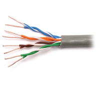

← العودة للصفحة الرئيسية
ما هو كابل CAT5e؟

كابل CAT5e (Category 5 Enhanced) هو نوع من كابلات الشبكة المحلية (LAN) المستخدمة لنقل البيانات في الشبكات المحلية. يُعتبر تحسينًا على كابل CAT5 الأصلي، حيث يوفر أداءً أفضل في نقل البيانات مع تقليل التداخل الكهرومغناطيسي.
الخصائص الرئيسية لكابل CAT5e:
- السرعة: يدعم سرعات تصل إلى 1000 ميجابت في الثانية (1 جيجابت)
- المسافة: يمكن استخدامه لمسافات تصل إلى 100 متر
- التردد: يعمل بترددات تصل إلى 100 ميجاهرتز
- المواد: يتكون من 4 أزواج من الأسلاك الملتوية
- الموصل: يستخدم موصل RJ-45 في نهايات الكابل
مكونات كابل CAT5e
يتكون كابل CAT5e من عدة مكونات أساسية:
1. الأسلاك الداخلية:
يحتوي الكابل على 8 أسلاك مقسمة إلى 4 أزواج، كل زوج ملتوي مع بعضه البعض لتقليل التداخل:
| رقم السلك |
اللون |
الوظيفة |
الزوج |
| 1 |
أبيض-برتقالي |
إرسال البيانات + |
الزوج 2 |
| 2 |
برتقالي |
إرسال البيانات - |
الزوج 2 |
| 3 |
أبيض-أخضر |
استقبال البيانات + |
الزوج 3 |
| 4 |
أزرق |
غير مستخدم |
الزوج 1 |
| 5 |
أبيض-أزرق |
غير مستخدم |
الزوج 1 |
| 6 |
أخضر |
استقبال البيانات - |
الزوج 3 |
| 7 |
أبيض-بني |
غير مستخدم |
الزوج 4 |
| 8 |
بني |
غير مستخدم |
الزوج 4 |
2. الموصل RJ-45:
موصل RJ-45 هو الموصل المستخدم في نهايات كابل الشبكة. يحتوي على 8 دبابيس معدنية صغيرة تُستخدم لتوصيل الأسلاك.
طرق توصيل كابل CAT5e
1. التوصيل المستقيم (Straight-through):
يُستخدم هذا النوع من التوصيل عند ربط أجهزة مختلفة، مثل ربط الحاسوب بالموزع (Switch) أو الموجه (Router).
ترتيب الأسلاك في التوصيل المستقيم:
| رقم الدبوس |
اللون |
الوظيفة |
| 1 | أبيض-برتقالي | إرسال + |
| 2 | برتقالي | إرسال - |
| 3 | أبيض-أخضر | استقبال + |
| 4 | أزرق | غير مستخدم |
| 5 | أبيض-أزرق | غير مستخدم |
| 6 | أخضر | استقبال - |
| 7 | أبيض-بني | غير مستخدم |
| 8 | بني | غير مستخدم |
2. التوصيل المتقاطع (Crossover):
يُستخدم هذا النوع عند ربط أجهزة متشابهة، مثل ربط حاسوبين مباشرة أو ربط موزعين.
ترتيب الأسلاك في التوصيل المتقاطع:
في هذا النوع، يتم تبديل مواضع الأسلاك الأخضر والبرتقالي في أحد طرفي الكابل:
| الطرف الأول |
الطرف الثاني |
اللون |
| 1 | 1 | أبيض-برتقالي |
| 2 | 2 | برتقالي |
| 3 | 6 | أبيض-أخضر |
| 4 | 4 | أزرق |
| 5 | 5 | أبيض-أزرق |
| 6 | 3 | أخضر |
| 7 | 7 | أبيض-بني |
| 8 | 8 | بني |
خطوات توصيل كابل CAT5e
الأدوات المطلوبة:
- كابل CAT5e
- موصلات RJ-45
- أداة قطع الكابلات
- أداة الضغط (Crimping Tool)
- مقياس الكابل (Cable Tester)
خطوات التوصيل:
- قطع الكابل: قطع الكابل بالطول المطلوب مع ترك مسافة إضافية قليلة
- إزالة الغطاء الخارجي: إزالة حوالي 2 سم من الغطاء الخارجي للكابل
- فرد الأسلاك: فرد الأسلاك الثمانية وإزالة أي عوازل إضافية
- ترتيب الأسلاك: ترتيب الأسلاك حسب اللون المطلوب (مستقيم أو متقاطع)
- قص الأسلاك: قص الأسلاك لتكون متساوية الطول (حوالي 1.5 سم)
- إدخال الأسلاك: إدخال الأسلاك في موصل RJ-45 بالترتيب الصحيح
- الضغط: استخدام أداة الضغط لتثبيت الموصل
- الاختبار: اختبار الكابل للتأكد من عمله بشكل صحيح
⚠️ تحذيرات مهمة:
- تأكد من أن الأسلاك مرتبة بالترتيب الصحيح قبل الضغط
- لا تترك أي جزء من الأسلاك خارج الموصل
- تأكد من أن الموصل مثبت بقوة
- اختبر الكابل بعد التوصيل للتأكد من عمله
استخدامات كابل CAT5e
1. الشبكات المحلية (LAN):
يُستخدم لربط أجهزة الحاسوب في المكتب أو المنزل
2. الإنترنت:
يُستخدم لتوصيل أجهزة الحاسوب بالموجه أو المودم
3. أنظمة المراقبة:
يُستخدم في أنظمة كاميرات المراقبة IP
4. أنظمة الهاتف:
يُستخدم في أنظمة الهاتف الرقمي
💡 معلومة مفيدة:
معظم الأجهزة الحديثة تدعم Auto-MDIX، مما يعني أنها تستطيع التعامل مع كلا نوعي التوصيل (المستقيم والمتقاطع) تلقائياً. ومع ذلك، من المهم معرفة الفرق بينهما لفهم الشبكات بشكل أفضل.
صيانة واستكشاف الأخطاء
مشاكل شائعة وحلولها:
1. عدم وجود اتصال:
- تحقق من ترتيب الأسلاك
- تأكد من أن الموصل مثبت بقوة
- اختبر الكابل باستخدام مقياس الكابلات
2. سرعة بطيئة:
- تحقق من جودة الكابل
- تأكد من عدم وجود تداخل كهرومغناطيسي
- تحقق من إعدادات الشبكة
3. انقطاع متكرر:
- تحقق من التوصيلات
- تأكد من عدم وجود تلف في الكابل
- تحقق من جودة الموصلات